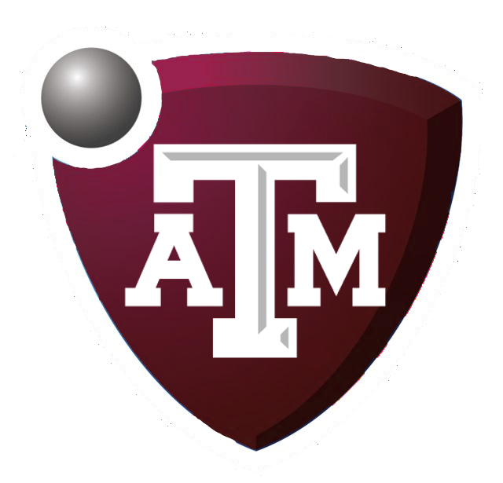

About Me
Schooling
Howdy!
My name is Shane Poldervaart and I am a Masters Student at Texas A&M University. My area of focus is AI where
I participate in research for the General Motors Autodrive II Challenge. In it 16 universities compete in order to make a
fully autonomous vehicle approaching multiple challenges such as perception, route planning,
and ethical issues surrounding it. I participate as part of the perception team who recognize traffic signs and signals along with
visualizing the environment around the car.
Learn more at the A&M Autodrive website.
Favourite Projects
- Autodrive: Working on the Autodrive project has easily been my favourite project and I have
multiple repositories involving various work done on it ranging from leveraging Deep Neural Networks to identify signs,
to state machines designed to handle traffic signals.
- CifarCNN: Cifar10 is a publicly available dataset featuring 32x32 images of 10 different classes to identify.
In order to tackle this challenege I created a residual neural network in pytorch to train and correctly classify the images.
Resnet sourse code available on Github
- Endeavr: Multidisciplinary Project through A&M's Endeavr program in which we worked to help plan Nolanville
Texas to be a Smart City. Our computer science application was accomplished by training a deep neural network to
identify and categorize pedestrians, cyclists, and motor vehicles in Nolanville streets to compile data analytics for
other disciplines to use in their decision-making process such as optimal places to place bus stops, plan new sidewalks,
and later evaluate the results of these proposals. Endeavr source code available on Github
- Training Packs: Discord Bot that provides Rocket League training packs with a wide range of search options and various other functions curated from
Wayprotein's Training Pack list. Training Pack Bot source code on Github
Personal Life
Hobbies
- Scuba Diving: Scuba diving is a great passion of mine that I try to take trips of regularly. When you are underwater
it is really a whole new world seeing all of the fish and marine life.
- Reading: I greatly enjoy reading as there is so much room for imagination. Some of my favourite books are Dune and Enders Game both of which
lean heavily into science fiction and present the world in new ways.
- Disc Golf: A recent hobby that I have picked up with coworkers has been disc golf! It's a ton of fun to go out and see the different courses
and of course compete and hang out with each other seeing who can get the furthest drives. It functions a lot like regular golf in that there is a surprisingly large amount
of form that goes into it along with many types of discs that will all fly differently similar to choosing different clubs in regular golf.
- Rocket League:
such as profit shares and tournaments for A&M students.
Rocket League
While in school and one of the primary focuses of my life is my involvement in the Texas A&M
Rocket League Community as former president of the club and captain of the A team. It has been an amazing journey seeing the
community grow over the years along with the development of the Esports scene in general. As captain of the team I
organize tryouts, practices, and manage the team. In addition to that, I organize community events with other administrators
Join the A&M RL Discord
| Year |
Number of Members |
| 2017 |
150 |
| 2018 |
250 |
| 2019 |
375 |
| 2020 |
550 |
| 2021 |
700 |
